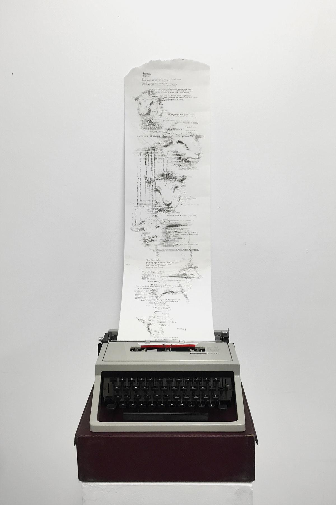
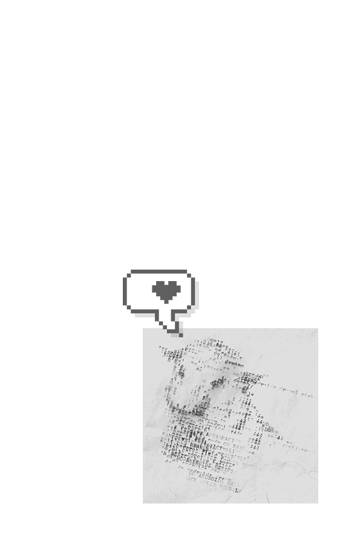
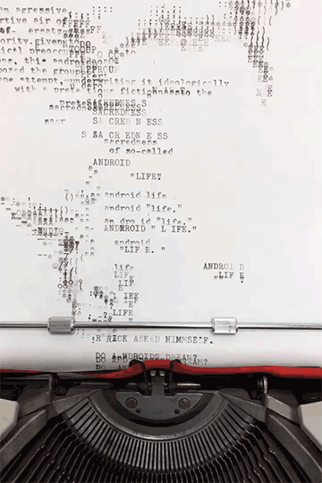

do you ever dream of (2017)
installation/illustration. typewriter, pigment, paper

gallery installation view.
_
a very literal take on the name of the book do androids dream of electric sheep? by philip k. dick in the 1960s.
_
the typewriter is/was a letter-typing device. the routine of typing in perfectly formatted rows is interrupted, and the machine is given a new task - to draw from an artist's perspective.
a glitched-out printer would start printing overlaid symbols; the machine taking control of its own fate. if only a typewriter too... which is basically the predecessor of a computing machine, an analog machine instead of an android.
when a typewriter starts fabricating, does it start dreaming too?
_
[r.i.p. once my beloved typewriter, bargained for on my very first visit to st lawrence sunday fair, then lost somewhere in scarborough, its ghost now buried deep in that winter's icy rain.]

